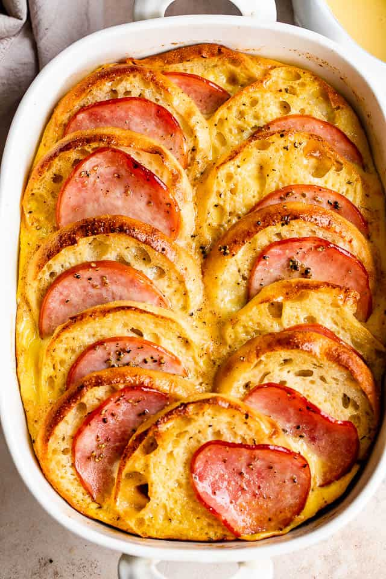

Overnight Eggs Benedict! Easy to make ahead, perfect for brunch or a special occasion or overnight house guests.
EGGS BENEDICT CASSEROLE
Ingredients
cooking spray
8 large eggs
2 cups milk
3 green onions, chopped
1 teaspoon onion powder
1 teaspoon salt
3/4 pound Canadian bacon, cut into 1/2-inch dice
6 English muffins, cut into 1/2-inch dice
1/2 teaspoon paprika
1 (.9 ounce) package hollandaise sauce mix
1 cup milk
1/4 cup margarine
Steps
Spray 9x13-inch baking dish with cooking spray.
Whisk eggs, 2 cups milk, green onions, onion powder, and salt together in a large bowl until well mixed.
Layer half the Canadian bacon in the prepared baking dish. Spread English muffins over meat and top with remaining Canadian bacon. Pour egg mixture over casserole. Cover baking dish with plastic wrap and refrigerate overnight.
Preheat the oven to 375 degrees F (190 degrees C).
Sprinkle casserole with paprika; cover with aluminum foil.
Bake in preheated oven until eggs are nearly set, about 30 minutes; remove foil. Continue baking until eggs are completely set, about 15 more minutes.
Whisk hollandaise sauce mix with 1 cup milk in a saucepan. Add margarine and bring to a boil, stirring frequently. Reduce heat to medium-low, simmer, and stir until thickened, about 1 minute. Drizzle sauce over casserole to serve.